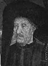

Denizci Henry olarak da bilinen Prens Henry (1394-1460), 15. yy’da yapılan ilk Atlantik yolculuklarından bazılarını organize eden bir Portekiz asilzadesiydi. Onun gezileri, Portekiz’i önemli bir deniz gücü haline getirdi. Gemi inşaatında kaydedilen teknolojik yeniliklerden yararlandı. Daha sonra Hindistan ve Yeni Dünya’ya gidecek olan denizcilerin yolunu açacak keşifler yaptı.

Tüm bunlara rağmen Henry aynı zamanda Afrika köle ticaretinin kurucuları arasındadır. Köle ticareti, Portekiz İmparatorluğu’nda tam 400 yıl boyunca devam edecekti.
Henry, Kral 1. John (1357-1433) ve Kraliçe Philippa’nın (1360-1415) üçüncü oğluydu. Yirmi bir yaşındayken Kuzey Fas sahilindeki Ceuta’nın fethine katıldı. Burası Portekiz İmparatorluğu’nun ilk sömürgesi olacaktı. Fetih ve daha sonra Ceuta’yı savunma süreci fazla maliyetli olmuştu. Her şeye rağmen Prens, Afrika’da izleyecekleri yayılmacı politikanın getireceği muazzam zenginliğin bu maliyete değeceğinden emindi.
Karavela filoları ile Afrika sahilini ve Atlantik Okyanusu’nun doğusunu keşfetmeye başladı. Denizcileri Azores, Cape Verde ve Atlantik’teki Madeire adalarını buldular. Bunların hepsi Portekiz mülkü olmuştu. Henry’nin keşiflerinin bir sonucu olarak köleler ve altın, Lizbon’a akmaya başladı. Bu durum çok geçmeden Portekiz’i önemli bir ekonomik güç haline getirecekti.
Henry 1460 yılında öldüğünde altmış altı yaşındaydı. Onun harekete geçirdiği güçler dünyada büyük değişikliklere neden olacaktı. 1498 yılında Portekizli denizci Vasco de Gama (1460-1524), Ümit Burnu üzerinden Hindistan’a ulaştı. Orada bir Portekiz ticaret kolonisi kurdu. Avrupa ve Asya tarihinde yeni bir dönem açılıyordu.
Ek Bilgiler
1- Prensin amcası İngiltere Kralı 4. Edward’tı (1366-1413).
2- Keşfinden 600 yıl sonra bile Madeira adaları, halen Portekiz toprağıdır. Portekiz’in son denizaşırı topraklarından biri sayılmaktadır. Bir şarap çeşidi olan “madeira” ilk bu adada yapılmıştır.
3- Prensin tacında “Talant de bien faire”(Başarma Arzusu) yazılıydı.